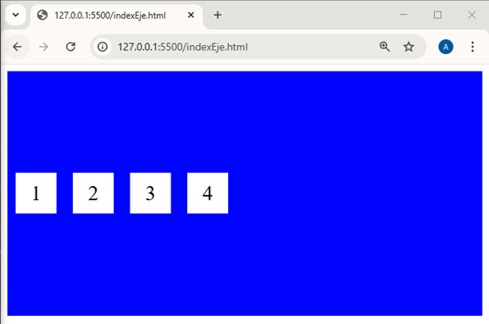
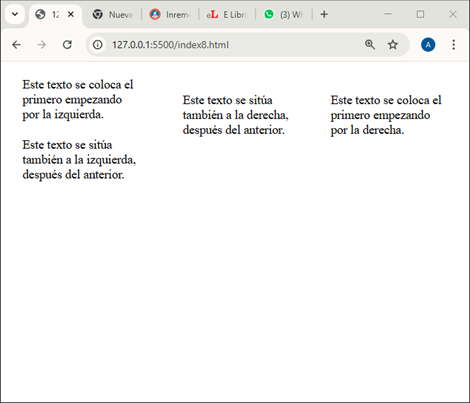
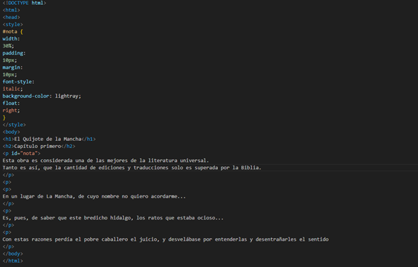
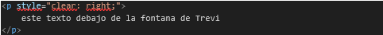
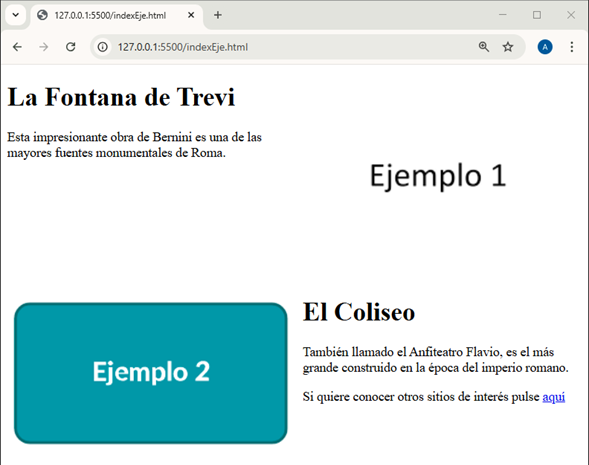

píxeles más pequeña. Si no le gustara el efecto que produce, quite 2 píxeles de ancho a ambas imágenes, en vez de 4 a una de ellas. Para finalizar esta sección, se va a analizar el código de un documento HTML en el que se expone un caso frecuente donde los elementos de una lista se distribuyen horizontalmente (por defecto, lo hacen en vertical) para convertirlos en la barra de navegación de una página web. A continuación, se muestra el resultado que se pretende obtener:
El código HTML con el que se ha conseguido este efecto es el siguiente:
Hace las veces de título de la página y una lista cuyos elementos contienen los hipervínculos que llevan a los principales buscadores de Internet (el valor del atributo href de cada uno ellos son los URL de Google, Yahoo! y Bing). Como pudo apreciar en la imagen anterior, tanto la barra de navegación (lista de hipervínculos) como el encabezado están centrados. Para conseguirlo, la primera regla de estilo emplea el selector universal (“*”), en cuyo bloque de declaraciones se asigna el valor center a la propiedad text-align.
Sin embargo, como la lista tiene por defecto un margen interno, esta no queda completamente centrada, motivo por el que la regla a la que está vinculada se encarga de eliminarlo (asigna el valor 0px a la propiedad padding).
Respecto de las opciones del menú, todas tienen el mismo estilo: un color de fondo amarillo (propiedad background-color), un margen interno de 10 píxeles de grosor que rellena cada opción de dicho color (propiedad padding) y un margen externo que las separa entre sí 20 píxeles (propiedad margin).
Pero, lo más importante desde el punto de vista de este ejercicio, es que los elementos de la lista se muestran horizontalmente al haber asignado el valor inline a la propiedad display.
Los modos de distribución de elementos que se han visto hasta ahora sitúan los elementos debajo o al lado de los que hay en la página, en función de su comportamiento natural o porque así se había indicado al asignar los valores block o inline a la propiedad display. Sin embargo, las páginas actuales exigen diseños más complejos y elementos.
A tal fin, HTML ofrece el modo de caja flexible, que se establece al asignar el valor flex a la propiedad display del contenedor que hace de caja, en el que se van a colocar los elementos. Una vez hecho esto, tendrá la posibilidad de utilizar las siguientes propiedades:
• flex-direction. Fija la dirección (horizontal o vertical) en la que se quieren distribuir los elementos.
• flex-wrap. Si el ancho de un contenedor es inferior al de la suma de los elementos que incluye, permite que estos se sitúen en filas por debajo.
• flex-flow. Equivale a las dos anteriores.
• justify-content. Establece la forma de colocar horizontalmente los elementos cuando hay más espacio del que pueden ocupar.
• align-items Establece la forma de colocar verticalmente los elementos a lo alto de cada fila, cuando hay más espacio del que pueden ocupar.
• align-content. También ordena los elementos verticalmente, pero a diferencia del anterior, no lo hace por filas, sino teniendo en cuenta el alto del contenedor. De esta forma, se consigue que todos los elementos se ordenen como si fueran un solo bloque.
Insistir en el hecho de que estas propiedades solo tienen efecto en elementos flexibles, es decir, aquellos que están dentro de un contenedor cuya propiedad display tiene el valor flex.
A continuación, se describirá en detalle cada una de estas propiedades, empezando por la primera (flex-direction), que puede tomar los valores:
• row. Los elementos se distribuyen horizontalmente. Es el valor por defecto.
• row-reverse. Igual que el anterior, pero en orden inverso.
• column. Los elementos se distribuyen verticalmente.
• column-reverse. Igual que el anterior, pero en orden inverso. El siguiente código representa un ejemplo de uso de esta propiedad:
Tal como puede apreciar, el cuerpo del documento HTML está formado por un contenedor div> dentro del que hay otros cuatro, en cada uno de los cuales hay un número que los identifica. Para crear las reglas de estilo, se han creado dos clases (“contenedor” y “contenido”).
La primera se vincula al contenedor superior y la otra a todos los que incluye. En el bloque de declaraciones de la regla asociada a la clase “contenedor”, es decir, la que afecta al contenedor superior, lo primero que se hace es asignar el valor flex a la propiedad display para convertir los contenedores interiores en elementos flexibles. Además, como se quiere que estos se distribuyan de forma horizontal, también se asigna el valor row a la propiedad flex-direction.
Las dos últimas propiedades (width y background-color) se utilizan para ajustar su ancho al de los elementos contenidos (no el de la pantalla) y pintar de azul el espacio ocupado por este. El estilo de la clase “contenido” afecta a los contenedores incluidos en el superior.
Tendrán un color de fondo blanco y un ancho de 50 píxeles (background-color y width). El alto vendrá dado por el de la línea en la que se escribe el número (line-height), que es de 50 píxeles. El tamaño de la fuente del texto será la mitad, es decir, de 25 píxeles (font-size) y estará centrado horizontalmente (el valor de text- align es center).
Por último, los contenedores interiores se separan entre sí y del superior mediante un margen de 10 píxeles (margin).
Al ser mayor el alto de la línea que el de la fuente, el texto queda centrado verticalmente.
A continuación se muestra el resultado que se obtendría, tanto para este código (los contenedores se distribuyen horizontalmente), como para otro en el que se hubiera asignado el valor column a la propiedad flex-direction (lo hacen verticalmente):
Esta otra imagen corresponde al mismo código, solo que en esta ocasión se asigna los valores row-reverse y column-reverse a la propiedad flex-direction. Observe que ahora los números de los contenedores aparecen en sentido contrario.
El código inicial del ejercicio anterior establecía una distribución horizontal de los contenedores interiores (la propiedad flex- direction tomaba el valor row).
Se trataba de una situación ideal en la que todos ellos cabían dentro del principal, ya que se había especificado que su ancho coincidiera con el de los interiores. Sin embargo, puede haber dispositivos en los que este sea muy limitado (por ejemplo, el de un teléfono móvil en posición vertical).
En ese caso, ¿qué sucedería? Para descubrirlo, asigne al contenedor principal un ancho de, por ejemplo, 200 píxeles.
Por lo tanto, modifique la declaración de la regla de estilo asociada a la clase “contenedor” en la que participa la propiedad width de la siguiente forma:
En la imagen mostrada a continuación se puede ver el resultado obtenido tras realizar este cambio:
Se aprecia claramente que los contenedores interiores son más estrechos. Eso es debido a que la regla de estilo que les afecta solo establece un margen exterior (propiedad margin), no interior.
Por ese motivo, al reducir el tamaño del contenedor principal, el navegador ha disminuido el margen interior para encajarlos en el ancho disponible, respetando el margen exterior (recuerde que era de 10 píxeles).
Entonces, ¿qué sucedería si se redujera aún más el ancho del contenedor principal? Para averiguarlo, limítelo a tan solo 100 píxeles. Esta otra imagen muestra lo que sucede:
En tales circunstancias, el margen interno se reduce al mínimo (el ancho de los contenedores interiores es el del propio número). A pesar de esta medida tan drástica, siguen sin caber dentro del principal (el margen externo se respeta ya que se ha establecido explícitamente) por lo que se produce un desbordamiento por la derecha.
Si no quiere que se produzca este efecto indeseado, tendrá que añadir otra declaración a la regla de estilo del contenedor principal en la que se asigne el valor wrap a la propiedad flex-wrap.
De esta forma, cuando los contenedores interiores no quepan a lo ancho, se irán situando en filas por debajo.
Siempre que realice un diseño, asegúrese de que los elementos permanezcan dentro de los contenedores destinados a cada uno de ellos. De lo contrario, el aspecto de la página podría no coincidir con el esperado.
Para comprobarlo, añada esta propiedad a la regla de estilo de la clase “contenedor”, la cual quedaría así:
A continuación se muestra el efecto producido por esta última propiedad, tanto para un ancho del contenedor principal de 100 píxeles (corresponde al código anterior), como de 200 píxeles:
píxeles caben dos por fila. Puesto que habitualmente las propiedades flex-direction y flex-wrap se utilizan de forma conjunta, estas se pueden sustituir por una sola, flex-flow, cuyo valor toma los valores de ambas (separadas por un espacio):
Así, por ejemplo, estas dos declaraciones del código anterior:
se podrían sustituir por una sola:
Una vez distribuidos los elementos en filas, bien porque el ancho del contenedor era suficiente para darles cabida, o después de haber actuado la propiedad flex-wrap, será necesario determinar la estrategia de distribución en cada una de ellas. A tal fin se utiliza la propiedad justify-content, que puede tomar los siguientes valores:
• center. Los elementos se centran horizontalmente.
• flex-start. Los elementos se sitúan de izquierda a derecha.
• flex-end. Los elementos se sitúan de derecha a izquierda.
• pace-between. El espacio disponible horizontalmente se distribuye de forma uniforme entre los elementos.
• space-around. El espacio disponible horizontalmente no solo se distribuye entre los elementos, sino también entre estos y los límites del contenedor.
• space-evenly. Igual que el anterior, pero el espacio de separación en los extremos es el mismo que entre los elementos (no la mitad). Modifique la regla de estilo asociada a la clase “contenedor” de documento HTML utilizado de ejemplo para que ahora sea:
Como puede observar por el valor de la propiedad justify- content, ahora los contenedores interiores quedarán centrados. En este caso concreto lo harán en la pantalla, porque al haber eliminado la propiedad width del bloque de declaraciones de esta regla, el contenedor principal ocupa todo el ancho de la ventana del navegador.
El resultado lo puede ver a continuación:
Estas otras dos imágenes muestran el efecto de cambiar el valor de la propiedad justify-content por flex-start y flex-end (en vez de center).
En cambio, en estas últimas imágenes se aprecia el resultado de asignar el valor space-between, space-around y space-evenly a la propiedad justify-content de la regla de estilo anterior.
En la superior, el espacio horizontal sobrante se reparte solo entre los contenedores interiores, mientras que en la del centro también se tienen en cuenta los extremos (aunque la mitad). Finalmente, en la imagen inferior el espacio se reparte de forma completamente homogénea.
Si con la propiedad justify-content se establecía la estrategia de distribución horizontal de los elementos, con align-items y align-content lo podrá hacer en sentido vertical a lo alto de cada fila o del contenedor, respectivamente. Empecemos analizando los efectos de la primera propiedad, align- items, la cual puede tomar los siguientes valores:
• stretch. Los elementos se estiran para ocupar todo el alto de cada fila. Es el valor por defecto.
• center. Los elementos se centran a lo alto de cada fila.
• flex-start. Los elementos se sitúan de arriba hacia abajo a lo alto de cada fila.
• flex-end.
Los elementos se sitúan de abajo hacia arriba a lo alto de cada fila. Modifique de nuevo la regla de estilo asociada a la clase “contenedor” de forma que ahora sea:
Como puede observar, además de la propiedad flex-direction, cuyo valor distribuye los elementos del contenedor de forma horizontal (se podía haber hecho de forma vertical), también se utiliza la propiedad align-items para centrarlos verticalmente (su valor es center). A continuación, se presenta el resultado obtenido:
Se aprecia claramente que la fila de elementos queda centrada verticalmente en la ventana del navegador (incluso aunque modifique su altura). En estas otras imágenes se puede advertir el cambio de aspecto de la página tras modificar el valor de esta última propiedad por flex- start y flex-end.
El código utilizado de ejemplo solo muestra una fila, pero, si hubiera varias, la alineación al centro, arriba o abajo se haría tomando como referencia el alto de cada fila. Por ejemplo, en caso de haber dos filas, los elementos de la primera se distribuirían al centro, arriba o debajo de la mitad superior del contenedor, mientras que los de la segunda lo harían en la mitad inferior.
Para comprobarlo, modifique una vez más la regla de estilo de contenedor principal con objeto de que los contenedores interiores se repartan en dos filas:
Lo que se ha hecho es añadir la propiedad flex-wrap para que los elementos que no quepan en una fila se desplacen a otras inferiores. Eso es precisamente lo que ha pasado al limitar el ancho del contenedor principal a 200 píxeles (propiedad width), que ha provocado que ahora los cuatro contenedores interiores se repartan en dos filas.
La propiedad heigth solo se incluye para hacer más patente el efecto de centrado por filas. El resultado obtenido tras efectuar estos cambios es el siguiente:
Queda patente que los contenedores interiores se centran verticalmente por fila. Si en vez del valor center, la propiedad align-items tomara los valores flex-start y flex-end, el efecto sería el mostrado en esta otra imagen, donde la alineación de los contenedores (tanto en la parte superior como en la inferior) también se realiza por filas:
Si lo que quiere es alinear verticalmente todos los elementos en bloque a lo alto del contenedor, independientemente del número de filas que haya, deberá usar la propiedad align-content. Esta toma los siguientes valores:
• stretch. Los elementos se estiran para ocupar todo el alto del contenedor. Es el valor por defecto. • center. Los elementos se centran verticalmente a lo alto del contenedor.
• flex-start. Los elementos se sitúan desde la parte superior del contenedor hacia abajo.
• flex-end. Los elementos se sitúan desde la parte inferior del contenedor hacia arriba.
• space-between. El espacio disponible verticalmente se distribuye de forma uniforme entre los elementos.
• space-around. El espacio disponible verticalmente no solo se distribuye entre los elementos, sino también entre estos y los límites del contenedor.
• space-evenly. Igual que el anterior, pero el espacio de separación en los extremos superior e inferior es el mismo que entre los elementos (no la mitad).
Tanto en esta propiedad, como las anteriores relacionadas con los elementos flexibles, también pueden tomar el valor inherit o initial.
Para demostrar la forma en la que se comporta esta propiedad, sustituya la propiedad align-items por align-content en la regla de estilo anterior (aquella que afectaba al contenedor principal). El valor de ambas propiedades es el mismo, por lo que quedará así:
En la imagen inferior se compara el resultado anterior (izquierda) con el nuevo (derecha) después de sustituir la propiedad align-items por align-content. Se aprecia claramente que, en este último caso, los contenedores internos se centran en bloque respecto del contenedor principal (no por filas).
En esta otra imagen se contrastan los efectos obtenidos al asignar el valor flex-start a la propiedad align-items (izquierda) con los de la propiedad align-content (derecha).
En la parte izquierda (propiedad align-items) se puede observar que los contenedores interiores 1 y 2 se alinean en la parte superior de la primera fila, mientras que el 3 y el 4 lo hacen en la parte superior de la segunda fila. En cambio, a la derecha (propiedad align-content) los cuatro elementos se agrupan en la parte superior del contenedor principal.
Por último, esta nueva imagen confronta el resultado obtenido cuando se asignó el valor flex-start a la propiedad align-items (izquierda) con el de la propiedad align-content (derecha).
Ahora, en la parte izquierda (propiedad align-items) se muestra como los contenedores interiores se alinean en la parte inferior de la fila donde se encuentran, mientras a la derecha (propiedad align- content) lo hacen en bloque en la parte inferior del contenedor principal.
Antes de finalizar esta sección se analizará el siguiente código, que se puede utilizar como plantilla para centrar cualquier elemento (en este caso, un contenedor de 100 píxeles de lado) dentro otro superior o en la propia página:
Como puede observar, el cuerpo del documento está formado únicamente por un contenedor div>, cuyo aspecto es el de un cuadrado azul de 100 píxeles de lado, tal como se define en la regla de estilo de esta etiqueta.
El cuerpo del documento (la etiqueta body>) representa el contenedor superior donde se encuentra, por lo que la regla de estilo de esta etiqueta será la responsable de centrarlo horizontal y verticalmente en la página. En ella, lo primero que se hace es establecer un modo de caja flexible (se asigna el valor flex a la propiedad display).
Hecho esto, las propiedades justify- content y align-items lo centra en ambas direcciones (se asigna a las dos el valor center). Sin embargo, para que la alineación vertical tenga realmente efecto, es imprescindible asignar un valor del 100% a la propiedad height de las etiquetas html> y body>. Por ese motivo, en la regla de estilo anterior había una última declaración que especificaba que el alto del contenedor body> fuera del 100%.
Esa misma declaración aparece también en la regla que afecta al contenedor superior de la página (etiqueta ), que es la última que faltaba por describir. Una vez cargada esta página en Chrome, la siguiente imagen demuestra que el cuadrado azul permanece en el centro de la pantalla, aunque se redimensione la ventana del navegador.
Si en la sección anterior aprendió cambiar el modo de presentación que tiene por defecto cada elemento y a distribuirlos en modo de caja flexible, en esta conocerá la forma de hacer que floten hacia el extremo derecho o izquierdo del contenedor en el que se encuentren (o el de la ventana del navegador, si no estuvieran dentro de ninguno).
Para ello, deberá hacer uso de la propiedad float, que convierte cualquier elemento en flotante, cuyo valor determinará el lado del contenedor al que deberá dirigirse.
Cuando hay elementos flotantes, los siguientes se sitúan al lado (siempre que exista espacio suficiente), incluso aunque su modo de presentación sea en bloque. Si quisiera ubicarlos debajo, deberá hacer uso de la propiedad clear, objeto de estudio de una sección posterior.
Tal como se acaba de indicar, para que un elemento flote a los lados del contenedor en el que se encuentra, deberá hacer uso de la propiedad float, cuyos principales valores son:
• none. El elemento no flota. Es el valor por defecto.
• right. El elemento se coloca en la parte derecha del contenedor donde se encuentra (o de la página, si no estuviera dentro de ninguno). Si se añadieran nuevos elementos, se irían situando a su izquierda.
• left. El elemento se ubica a la izquierda. Si se añadieran nuevos elementos, se irían situando a su derecha. Como viene siendo habitual en muchas otras propiedades, esta también puede tomar los valores initial e inherit.
Para demostrar cómo afecta esta propiedad al flujo de distribución de elementos de una página, el siguiente código de ejemplo muestra cuatro columnas de texto situadas por parejas a ambos lados de la ventana del navegador:
El cuerpo del documento está formado por cuatro párrafos vinculados a dos clases: “derecha” e “izquierda”. En las reglas de estilo asociadas se asigna el valor right o left a la propiedad float para hacerlos flotar uno al lado del otro. Sin dichas reglas, el texto de los párrafos se mostraría en bloque (uno debajo del otro).
La otra regla de estilo afecta a todos los párrafos y se encarga de limitar el ancho a 150 píxeles (propiedad width) con el fin de que tomen la apariencia de columnas. Además, crea un margen de separación entre ellos de 20 píxeles (propiedad margin).
En la imagen mostrada a continuación se puede ver el resultado obtenido:
Como puede observar, los elementos se sitúan a la derecha o a la izquierda según la clase a la que pertenezcan. El orden en el que aparecen en el documento HTML es importante, ya que los que están después respetan el espacio ocupado por los anteriores en el mismo lado. Pruebe a cambiar dicho orden para ver el efecto producido.
Si no hubiera espacio suficiente para mostrar todos los elementos al mismo nivel, estos se irían desplazando hacia abajo. Si quiere comprobar el orden en el que van bajando y la posición que van ocupando, reduzca progresivamente el tamaño de la ventana del navegador.
Como puede apreciar en la siguiente imagen, el primer elemento que se mueve hacia abajo es el último añadido al documento HTML.
Si siguiera reduciendo el tamaño de la ventana, el siguiente elemento en bajar sería el anterior en el documento HTML, que ocuparía la posición más a la izquierda del nivel inferior, desplazando el elemento que había allí. El motivo es porque en este segundo nivel se mantiene el flujo de distribución del nivel superior.
Si redujera aún más el ancho de la página, bajarían los párrafos de la parte derecha siguiendo las mismas reglas.
Los elementos flotantes tienen muchas utilidades. Por ejemplo, se usan con frecuencia para situar el contenido de la etiqueta
El código de la página anterior es el siguiente:
El texto de los párrafos se ha cortado intencionadamente.
Como puede apreciar, el cuerpo del documento tiene un encabezado h1> con el título de la obra y otro h2> para el primer capítulo. Luego hay cuatro párrafos, el primero de los cuales es la nota al margen y el resto son el inicio de los tres primeros párrafos del Quijote.
Como la nota al margen se muestra de forma diferente, tiene asociado un identificador (atributo id), que es el utilizado como selector en la regla de estilo encargada de darle el formato deseado.
En concreto, dicha regla reduce el ancho de la nota al 30% del de la página (propiedad width) y crea unos márgenes internos y externos de separación de 10 píxeles (propiedades margin y padding). Además, le asigna un color de fondo gris claro (propiedad background-color) y un tipo de fuente itálica (propiedad font- style) para destacarla del resto del texto de la página.
Por último, el valor de la propiedad float la sitúa en el lado derecho, por lo que los tres párrafos siguientes ocuparán el espacio que haya dejado libre a su izquierda. Los elementos flotantes pueden ser de cualquier tipo (no solo texto). Es más, lo habitual es que se combinen con imágenes en composiciones como la mostrada a continuación:
Para situar la imagen a la derecha del texto, se ha utilizado el siguiente código:
El cuerpo del documento se compone de una imagen, un encabezado h1> que hace de título y un párrafo con una breve descripción de la Fontana de Trevi. La imagen, que ocupa la mitad del ancho del navegador (el valor del atributo width es del 50%) se sitúa al lado derecho de la página, ya que tiene asociada un estilo en línea en el que la propiedad float toma el valor right.
Todo lo que se añada a continuación (en este caso, el encabezado y el párrafo) ocupará el espacio que haya dejado libre a su izquierda. Aunque el uso habitual de los elementos flotantes es el que acaba de ver, también permiten crear efectos interesantes como el mostrado a continuación, que puede encontrar en muchas obras literarias:
Para conseguirlo, se ha utilizado el siguiente código HTML:
Como puede apreciar, el cuerpo del documento está formado únicamente por un párrafo, cuyo texto corresponde al primer capítulo del Quijote. Para que la primera letra del párrafo se muestre de forma diferente al resto, se ha utilizado la etiqueta span>, cuya apariencia se especifica en la única regla de estilo.
En su bloque de declaraciones, lo primero que se hace es convertirla en un elemento flotante que se mueva hacia la izquierda de la página (la propiedad float toma el valor left). De esta forma, el resto del texto se acoplará en el espacio que haya dejado libre a su derecha.
La fuente de dicha letra es del tipo Times New Roman (propiedad font-family) y tiene un tamaño cinco veces superior a la definida por defecto (propiedad font-size). Para que su borde superior coincida con el del resto del texto, del que se separa 3 píxeles (propiedad margin), se ha establecido una altura de línea de un 80% (propiedad line-height).
Al modificar el valor de esta característica se consigue el efecto de subirla o bajarla dentro del párrafo.
Una vez dispuestos los elementos a izquierda o derecha mediante la propiedad float, podría llegar a pensar que, cualquier otro elemento cuyo modo de presentación fuera en bloque, se ubicaría debajo de los anteriores. Sin embargo, eso no es así, ya que trataría de ocupar el espacio libre que hay al lado de los elementos flotantes (a no ser que no entrara en dicho espacio). Si quiere evitar esta situación, deberá usar la propiedad clear. Por lo tanto, la propiedad clear se emplea para situar un elemento debajo de otros que floten. Pero, con frecuencia, dichos elementos suelen tener alturas diferentes. En ese caso, ¿debajo de quién se colocaría? El valor asignado a esta propiedad es el que lo determinaría, en concreto:
• none. El elemento ocupa el espacio libre que hay al mismo nivel de los flotantes (a no ser que no quepa, en cuyo caso, se mostraría debajo). Es el valor por defecto.
• left. El elemento se sitúa debajo del que llega más abajo entre los que flotan a la izquierda.
• right. El elemento se sitúa debajo del que llega más abajo entre los que flotan a la derecha.
• both. El elemento se sitúa debajo del que llega más abajo (independientemente de si flota a la derecha o a la izquierda).
Esta propiedad también puede tomar el valor inherit (no así initial).
Para entender estas opciones, se va a desarrollar un código de ejemplo similar al utilizado en la sección anterior, en el que se mostraban cuatro columnas de texto flotando por parejas a izquierda y derecha de la página. En aquella ocasión, todas estaban al mismo nivel. Ahora se distribuirán en dos niveles, tal como se muestra a continuación.

El código utilizado para obtener este resultado ha sido el siguiente:
Los párrafos cuyo estilo se define con el atributo style (no mediante reglas de estilo). Todos los párrafos hacen uso de la propiedad width a fin de mostrar el texto en columnas de 200 píxeles de ancho. El primer párrafo se coloca a la derecha y el segundo a la izquierda (la propiedad float toma el valor right y left, respectivamente).
Para que el tercer párrafo se sitúe a la derecha, pero debajo del primero, además de la propiedad float se utiliza también clear. Al asignarle el valor both quedará por debajo del párrafo superior con más texto.
Pero, lo que le habrá llamado la atención es que el situado en la parte inferior izquierda no hace uso de dicha propiedad. El motivo es porque el anterior ya rompió el flujo de distribución de elementos del primer nivel, creando el segundo. Si volviera a utilizar la propiedad clear, crearía un tercer nivel.
Con el fin de afianzar el conocimiento sobre los efectos de la propiedad clear, se realizarán una serie de modificaciones a este nuevo código de ejemplo, en el que inicialmente se emplea la propiedad float para combinar texto e imágenes en un mismo nivel:
En esta ocasión, se muestran dos imágenes: la Fontana de Trevi a la derecha y el Coliseo a la izquierda (el valor de la propiedad float de dichas imágenes es right y left, respectivamente). Además, observe que la Fontana de Trevi se muestra con un ancho de 250 píxeles, mientras que el Coliseo lo hace con tan solo 200 píxeles (propiedad width). Más adelante entenderá por qué se ha hecho así.
Además de las imágenes, en la página se muestran dos párrafos de 150 píxeles de ancho (propiedad width), los cuales quedan separados de las imágenes por un espacio de 20 píxeles (propiedad margin). Para que cada uno quede “pegado” a la imagen que le corresponde, ambos párrafos también hacen uso de la propiedad float.
El aspecto de esta página es el siguiente:
Ahora, añada este párrafo a continuación de los otros dos:
p>Seguranmente crea que este texto se situa por debajo de las imagenes /p>
Es probable que el texto refleje lo que piense que va a suceder, ya que, al tratarse de un párrafo, debería mostrarse debajo de las imágenes. Pero, como puede comprobar a continuación, lo que hace es ocupar el espacio que han dejado libre los elementos flotantes en el centro.
Si el texto fuera lo suficientemente extenso, se iría desbordando por debajo de los párrafos, luego debajo del Coliseo y, finalmente, de la Fontana de Trevi, ocupando progresivamente el área amarilla de la imagen anterior.
Le animo a que haga este ejercicio y compruebe la forma tan aparentemente extraña en la que se muestra el texto del párrafo a medida que se va rellenando dicho espacio según añade más frases.
Si el párrafo estuviera antes que los elementos flotantes en el documento HTML, este se mostraría en bloque de la forma habitual.
Para situar este último párrafo por debajo de los elementos flotante deberá hacer uso de la propiedad clear, como en este caso, en el que se le ha asignado el valor left:
La siguiente imagen muestra que ahora el texto aparece justo debajo del Coliseo.

Si quiere que dicho texto se escriba más abajo para que su altura sea la del borde inferior de la Fontana de Trevi, deberá asignar a la propiedad clear el valor right. También serviría el valor both, ya que esta imagen es la que llega más abajo con respecto a todos los elementos flotantes (no solo se incluyen las dos imágenes, sino los dos párrafos).
Esta otra imagen, resultado de refrescar la pantalla del navegador, lo demuestra:
Aunque en los ejemplos anteriores se ha optado por utilizar el modo de presentación por defecto del párrafo (en bloque), podría ser cualquier otro diferente. A continuación, se aprecia la existencia de dos niveles de elementos flotantes en los que se intercambia la posición de los textos y las imágenes:
Debido a la elevada resolución de las imágenes utilizadas, quizás deba reducir el ancho de la ventana del navegador para ver la composición tal como se muestra.
El código que ha permitido obtener este resultado es el siguiente:
En el cuerpo del documento, la primera etiqueta img> muestra la Fontana de Trevi. El estilo en línea de esta etiqueta (atributo style) la sitúa en la parte izquierda de la pantalla (el valor de la propiedad float es left). Además, establece que su tamaño sea un 50% del ancho de la pantalla (propiedad width) y tenga un margen de separación de 20 píxeles con el texto (propiedad margin-left).
Este lo forma un encabezado h1> y un párrafo p> con una breve descripción, que aparecen al lado de la imagen en el espacio que deja libre a su izquierda. La imagen del Coliseo y su texto descriptivo se han agrupado dentro un contenedor div> del que hace uso la propiedad clear, por lo que se ubicarán por debajo de la imagen y el texto anterior.
Dentro de este contenedor, la distribución de la imagen y el texto es similar a los de arriba, solo que ahora la imagen se sitúa a la izquierda (el valor de la propiedad float es left) y el margen de separación se establece a la derecha, ya que es donde se encuentra el texto en este segundo nivel (propiedad margin-rigth). Solo queda abrir el documento HTML en Chrome y comprobar que el resultado coincide con el esperado. Antes de finalizar esta sección, debe saber que los contenedores no adaptan su tamaño al de los elementos flotantes (a diferencia de cualquier otro tipo de elemento).
Por ese motivo, si no incluyera otro elemento con una altura superior, lo desbordaría. En el ejemplo que acaba de ver no tiene ninguna consecuencia porque no hay más elementos debajo, pero, si los hubiera, se podrían producir efectos inesperados. Para hacer evidente este problema, añada el siguiente párrafo al final del documento utilizado de ejemplo:
Seguramente habría esperado que este párrafo apareciera al final de la página, debajo del Coliseo, pero, tal como se puede ver a continuación, lo ha hecho debajo de la descripción de este monumento.
Esto solo puede significar una cosa: el alto del contenedor
La mejor forma de verificar esta teoría es incorporar un borde al contenedor que permita saber el área que ocupa realmente:
Hecho este cambio, el resultado que se obtiene es el mostrado a continuación, donde se observa claramente que la imagen se desborda por abajo.
Aunque la imagen es el elemento más grande del contenedor, al ser flotante no determina su altura, que en este caso viene fijada por el encabezado y el párrafo (son los únicos elementos que no flotan dentro del contenedor).
La siguiente imagen demuestra que ahora la altura del contenedor sí tiene en cuenta la imagen. En consecuencia, el texto del último párrafo aparece en el lugar donde se quería que lo hiciera inicialmente.
Dibujar el borde de un contenedor es un truco muy utilizado cuando los elementos no se colocan en las posiciones esperadas. Una vez resuelto el problema, no se olvide quitarlo.
En este caso concreto, se podría haber obtenido el mismo resultado asignando el valor left o both a la propiedad clear en la etiqueta p>.
El uso de elementos flotantes es un recurso de diseño muy valioso que utilizará con frecuencia. Sin embargo, y a pesar de su aparente facilidad de manejo, cuando lo haga deberá tener en cuenta los efectos laterales que provoca su empleo:
• Los elementos flotantes no influyen en el alto del contenedor donde se encuentran.
• Los elementos cuyo modo de presentación es en bloque tratarán de ocupar el espacio libre que han dejado los flotantes a su lado.
Es importante que siempre los tenga presentes porque a menudo provocan que el resto de elementos de la página se sitúen en posiciones inesperadas sin un motivo aparente.
Hasta ahora, las únicas formas de situar los elementos en una página web han sido con los modos de presentación que tiene asignado por defecto cada elemento, distribuyéndolos mediante un modo de caja flexible o haciéndolos flotar a derecha e izquierda. Sin embargo, hay ocasiones en las que es necesario colocar un elemento en posiciones que no permiten ninguno de los modos anteriores.
En esos casos, deberá hacer uso de la propiedad position, que trabaja de forma coordinada con top, bottom, left y rigth.
La propiedad position establece el tipo de posicionamiento utilizado para un determinado elemento. Los valores que puede llegar a tomar son:
• static. El navegador establece la ubicación del elemento. Es el valor por defecto. • relative. El elemento se desplaza hacia un lado a partir de dicha posición.
• fixed. El elemento ocupa una posición fija e invariable en la ventana del navegador (incluso aunque haga scroll).
• absolute. Igual que en el caso anterior, pero en el área del contenedor donde se encuentra. Por ese motivo, ahora al hacer scroll el elemento se desplazaría con el resto del contenido de la ventana del navegador.
Además de initial e inherit, esta propiedad también puede tomar el valor sticky, cuyo comportamiento es una mezcla de los dos últimos modos de posicionamiento. No se va a describir porque no es compatible con todos los navegadores.
De todos los tipos de posicionamiento, el que se utiliza por defecto es el estático. En consecuencia, cuando no se usa esta propiedad, es como si le hubiera asignado el valor static. Eso podría hacerle pensar que no tiene ninguna utilidad. Sin embargo, lo precisará cuando, por ejemplo, dentro de un contenedor en el que se haya especificado otro tipo de posicionamiento, quiera ubicar uno o más elementos según este modo (no el establecido en el contenedor).
Cuando un elemento se ubica en la página de forma estática, no se tiene en cuenta el valor asignado a las propiedades top, bottom, left y rigth. Sin embargo, para el resto tienen la siguiente influencia en su emplazamiento:
• Posición relativa. Desplaza el elemento hacia un lado a partir del lugar ocupado por defecto (por ejemplo, la propiedad top lo movería hacia abajo a partir de dicho punto, la propiedad bottom hacia arriba, etc.).
• Posición fija o absoluta. Establecen la separación entre el lado de un elemento y el del contenedor donde se encuentre (por ejemplo, la propiedad top determina la distancia entre el lado superior del contenedor y el del contenido, la propiedad bottom lo haría en el lado inferior, etc.).
Veamos en detalle cada una de estas formas de situar un elemento HTML en pantalla.
El modo de posicionamiento relativo desplaza el elemento de la posición que tendría por defecto (posicionamiento estático) el valor asignado a las propiedades top, bottom, left y rigth. Con el fin de practicar con estas propiedades, realizará un ejercicio que permita situar en diagonal un cuadrado de color amarillo y otro azul de 100 píxeles de lado, tal como se muestra a continuación: